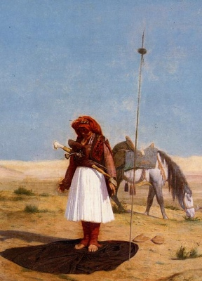

Sacred Texts Islam
Buy this Book at Amazon.com
|

A Prayer in the Desert (detail), by Jean-Leon Gerome [1864] (Public Domain Image) |
The Secrets of the Selfby Muhammad Iqbaltr. by Reynold Nicholson[1920] |
Muhammad Iqbal (b. Nov. 9, 1877, d. Apr. 21, 1938) was a prominent Islamic writer and politician. Born in the Raj, Cambridge educated, Iqbal is both the the intellectual founder of Pakistan, and its national poet. This poem was composed in Persian, using traditional Persian styles and tropes, and published in Lahore in 1915. The translator was the English orientalist Reynold A. Nicholson. Nicholson later went on to produce the first full critical translation of Rumi's Masnavi into English.